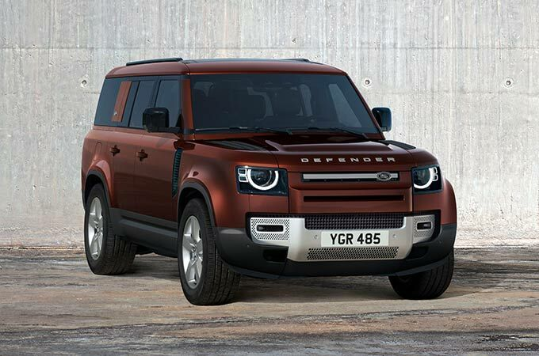
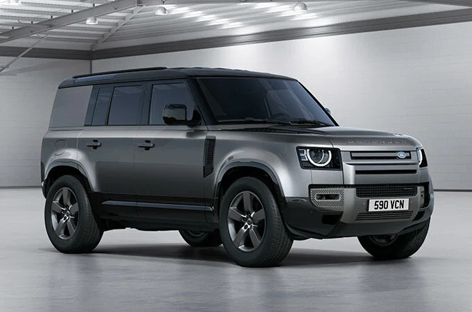

LAND ROVER DEFENDER
ЗДАТЕН НА НЕЙМОВІРНЕ.
ТЕПЕР ДОСТУПНИЙ У ВАРІАЦІЇ DEFENDER 130
ВИКИДИ CO2 г/км
От 57
ВИТРАТА ПАЛИВА в комбінованому циклі, л/100 км
От 2,5
ЕКСТЕР'ЄР
Defender вирізняється з-поміж інших. Його виразний силует свідчить про
сильний характер.
ДИВИТИСЯ ВІДЕО
ДІЗНАТИСЯ БІЛЬШЕ ПРО DEFENDER 90
ДІЗНАТИСЯ БІЛЬШЕ ПРО DEFENDER 110
ДІЗНАТИСЯ БІЛЬШЕ ПРО DEFENDER 130


ІНТЕР'ЄР
Інтер'єр автомобіля неймовірно універсальний. Салон Defender легко адаптується до будь-яких потреб.


СИДІННЯ
Defender 90 і 110 доступні з п'ятьма або шістьма сидіннями, версія 110 пропонує додаткові опціональні сидіння третього ряду. Defender 130 - це автомобіль з 8 повнорозмірними сидіннями, що забезпечує пасажирам неперевершений комфорт.
МАТЕРІАЛ ІЗ ЗАХИСНИМ ШАРОМ
Наш новий матеріал із захисним шаром, що не містить шкіри, більш екологічний порівняно з варіантами шкіряної обробки. Він дуже довговічний, легко очищується, має дрібнозернисту текстуру і м'який на дотик.
ЗМІНЮВАНИЙ ПРОСТІР
Змініть салон Defender відповідно до ваших уподобань. Вибирайте між проходом у салоні або переднім відкидним сидінням. Або можна встановити передню центральну консоль, з холодильником або без.
ОСОБЛИВОСТІ
НАДІЙНІСТЬ
Виготовлений із застосуванням найміцніших матеріалів і протестований у найсуворіших умовах. Defender вирізняється особливою надійністю.
ДИВИТИСЯ ВІДЕО
МОЖЛИВОСТІ
Неймовірно витривалий Defender гарантує високу керованість як у міських джунглях, так і в екстремальних дорожніх умовах, наприклад на піщаних поверхнях або вкритих льодом ділянках.
ДИВИТИСЯ ВІДЕО
ТЕХНОЛОГІЇ
Інноваційні та інтуїтивно зрозумілі технології, створені для захоплюючих подорожей XXI століття, відрізняються зручністю використання, широкими можливостями підключення та наочністю. Наші найбільш інтуїтивно зрозумілі технології на сьогоднішній день забезпечують зручність, підключення та наочність.
ДИВИТИСЯ ВІДЕО
СТВОРІТЬ СВІЙ DEFENDER
Легендарний і неперевершений — при будь-якій формі, розмірі та комплектації.
90
110
130
HARD TOP
DEFENDER 90
Продуманий як жоден інший автомобіль. Defender - це найнадійніший автомобіль з будь-коли створених нами. Завдяки постійному повному приводу1 та двоступінчастій роздаточній коробці він впорається практично з будь-якими випробуваннями в будь-яких умовах
DEFENDER 90 X-DYNAMIC
Створений для найскладніших завдань. Завдяки сидінням з неймовірно міцного матеріалу Robustec, а також заднім провушинам для буксирування чорного кольору і практичному оздобленню екстер'єру Defender X-Dynamic впорається з усіма труднощами.
DEFENDER 90 X
Готовий до всього у будь-яких умовах. Defender X поєднує в собі міць і позашляхові здібності, за рахунок яких ви можете вийти за межі звичайного і відкрити собі незвідане. Це виняткова витривалість. Це Defender X.
DEFENDER 90 XS EDITION
Лімітована серія Defender XS доступна в кольорах Gondwana Stone, Hakuba Silver, Santorini Black та Silicon Silver. Цей ефектний автомобіль оснащується пофарбованими в колір кузова нижніми накладками на кузов та колісними арками з 20-дюймовими колісними дисками Style 5095 з 5 здвоєними спицями, Gloss Dark Grey з контрастним оздобленням Diamond Turned.
DEFENDER 90 V8
Цей автомобіль створений із турботою про водія. Реакція дросельної заслінки оптимізована для відмінної динаміки на дорозі та найкращого контролю на бездоріжжі. Двигун V8 потужністю 525 к. с. з крутним моментом 625 Нм забезпечує розгін від 0 до 100 км/год лише за 5,2 секунди та максимальну швидкість 240 км/год.
DEFENDER 90 V8 CARPATHIAN EDITION
Лімітована серія Defender V8 Carpathian2 має такі ж характеристики руху по дорогах і бездоріжжю, як і Defender V8. Відмінність становлять дизайнерські рішення для кузова, у тому числі ексклюзивне поєднання лакофарбового покриття Carpathian Grey, захисної матової плівки, а також контрастних дверей багажного відділення з оздобленням Black та контрастного капота.
DEFENDER 110
Продуманий як жоден інший автомобіль. Defender - це найнадійніший автомобіль з будь-коли створених нами. Завдяки постійному повному приводу1 та двоступінчастій роздаточній коробці він впорається практично з будь-якими випробуваннями в будь-яких умовах.
DEFENDER 110 X-DYNAMIC
Створений для найскладніших завдань. Завдяки сидінням з неймовірно міцного матеріалу Robustec, а також заднім провушинам для буксирування чорного кольору і практичному оздобленню екстер'єру Defender X-Dynamic впорається з усіма труднощам.
DEFENDER 110 X
Готовий до всього у будь-яких умовах. Defender X поєднує в собі міць і позашляхові здібності, за рахунок яких ви можете вийти за межі звичайного і відкрити собі незвідане. Це виняткова витривалість. Це Defender X.
DEFENDER 110 XS EDITION
Лімітована серія Defender XS доступна в кольорах Gondwana Stone, Hakuba Silver, Santorini Black та Silicon Silver. Цей ефектний автомобіль оснащується пофарбованими в колір кузова нижніми накладками на кузов та колісними арками з 20-дюймовими колісними дисками Style 5095 з 5 здвоєними спицями, Gloss Dark Grey з контрастним оздобленням Diamond Turned.
DEFENDER 110 V8
Цей автомобіль створений із турботою про водія. Реакція дросельної заслінки оптимізована для відмінної динаміки на дорозі та найкращого контролю на бездоріжжі. Двигун V8 потужністю 525 к. с. з крутним моментом 625 Нм забезпечує розгін від 0 до 100 км/год лише за 5,2 секунди та максимальну швидкість 240 км/год.
DEFENDER 110 V8 CARPATHIAN EDITION
Лімітована серія Defender V8 Carpathian2 має такі ж характеристики руху по дорогах і бездоріжжю, як і Defender V8. Відмінність становлять дизайнерські рішення для кузова, у тому числі ексклюзивне поєднання лакофарбового покриття Carpathian Grey, захисної матової плівки, а також контрастних дверей багажного відділення з оздобленням Black та контрастного капота.

DEFENDER 130
Продуманий. Як жоден інший автомобіль. Defender - це найнадійніший автомобіль з будь-коли створених нами. Завдяки постійному повному приводу1, двоступінчастій роздаточній коробці та конструкції несучого кузова він впорається практично з будь-якими випробуваннями. У будь-яких умовах.
DEFENDER 130 X-DYNAMIC
Створений для найскладніших завдань. Завдяки сидінням з неймовірно міцного матеріалу Robustec, а також заднім провушинам для буксирування чорного кольору і практичному оздобленню екстер'єру Defender X-Dynamic впорається з усіма труднощами.
DEFENDER 130 X
Готовий до всього. У будь-яких умовах. Defender X поєднує в собі міць і позашляхові здібності, за рахунок яких ви можете вийти за межі звичайного і відкрити собі незвідане. Це виняткова витривалість. Це Defender X.

DEFENDER 130 FIRST EDITION
Неперевершене поєднання можливостей і простору. З підігрівом сидінь другого і третього рядів і чотиризонним клімат-контролем Defender 130 First Edition — це Defender для спільних пригод. В абсолютному комфорті.
DEFENDER 90 HARD TOP
Візьміть із собою все необхідне в Defender 90 Hard Top. Завдяки 1,355* літрам вантажного простору, фіксованій перегородці на повну висоту та точкам кріплення ваше спорядження буде надійно захищено, незалежно від місцевості.
DEFENDER 110 HARD TOP
Defender 110 Hard Top має 2,059* літрів практичного, гнучкого вантажного простору з підлогою, що замикається, щоб ваші інструменти не було видно. Доступний у чотирьох специфікаціях. Безкомпромісний. Завжди.

DEFENDER 110 HARD TOP X-DYNAMIC
Створений для найскладніших завдань. Defender 110 Hard Top X-Dynamic доступний з бічними панелями фірмового кольору кузова. Всередині в стандартну комплектацію входить неймовірно міцна стрічка Robustec, що акцентує увагу на сидіннях.
PLUG-IN HYBRID
Безкомпромісні позашляхові можливості та розширені функції. The technology behind з кожним днем він стає розумнішим і стійкішим.
ПАКЕТИ АКСЕСУАРІВ
Безмежні можливості. Дозвольте собі більше, вибравши один із чотирьох доступних пакетів опцій.

ПАКЕТ АКСЕСУАРІВ EXPLORER
Не зупиняйтеся на досягнутому. Доповніть свій Defender пакетом функцій Explorer. Киньте виклик стереотипам і вирушайте підкорювати незвідане.

ПАКЕТ АКСЕСУАРІВ ADVENTURE
Опановуйте нові маршрути із задоволенням. Пакет опцій Adventure дозволить обладнати ваш Defender усім необхідним, щоб вирушити в дорогу найскладнішими маршрутами.
ПАКЕТ АКСЕСУАРІВ COUNTRY
Подолайте найважчі перешкоди. Пакет опцій Country включає все необхідне, що дозволить вашому Defender приборкувати стихії і зробить кожну подорож незабутньою.
ПАКЕТ АКСЕСУАРІВ URBAN
Підкорюйте бетонні джунглі. Пакет опцій Urban підкреслить привабливий дизайн, надійність та впевненість Defender – ваш автомобіль виділятиметься у міському потоці транспорту.
ЯК ОБРАТИ?
НАДАЙТЕ ВІДПОВІДІ НА ТРИ ПИТАННЯ, ЩОБ ВИЗНАЧИТИ, ЯКА КОМПЛЕКТАЦІЯ DEFENDER І ЯКИЙ ПАКЕТ АКСЕСУАРІВ ПІДХОДЯТЬ ДЛЯ ВАС.
ЯК ОБРАТИ?
НАДАЙТЕ ВІДПОВІДІ НА ТРИ ПИТАННЯ, ЩОБ ВИЗНАЧИТИ, ЯКА КОМПЛЕКТАЦІЯ DEFENDER І ЯКИЙ ПАКЕТ АКСЕСУАРІВ ПІДХОДЯТЬ ДЛЯ ВАС.